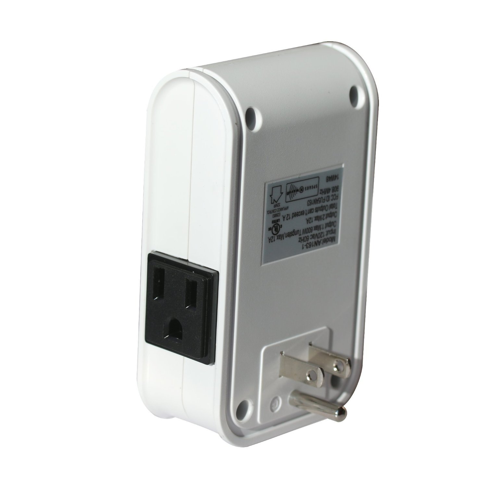
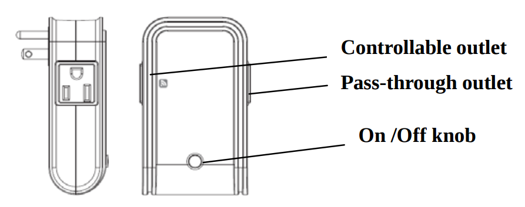

Everspring AN163 Z-Wave On/Off Appliance Module with Power Meter (improved AN128)¶

Brief information¶
- Frequency range: 908.42 MHz
- Operating voltage: 120V/60Hz
- Maximum load: 1440W
- Effective range: 30 m indoor
- Operating temperature: 0 ~ 40 oC
- Operating huminity: 85%
- Indoor use
How to add to VENUS app¶

- Newly add to VENUS network
- Press “Add button” (button ‘+’) in app
- Power-up the device
- Pressing On/Off button three times within 1.5 seconds
- Wait for VENUS scan & detect this device and inform in app
- Reset before adding
- Press “Add button” (button ‘+’) in app
- Pressing On/Off button three times within 1.5 seconds (to reset device)
- Pressing On/Off button three times within 1.5 seconds once more (to add)
- Wait for VENUS scan & detect this device and inform in app
How to add/remove associated device(s) to¶
To add associated device(s) to this sensor, below action is required:
- Add z-wave notified-devices (which will be associated to this sensor) to VENUS
- Select Associate button and then select notified-device(s) to add
- If successful, pop-up notification displays in VENUS app
To remove associated device(s) from this sensor, below action is required:
- Select Associate button and then select notified-device(s) to remove
- If successful, pop-up notification displays in VENUS app
Configuration description¶
True period
- If the setting is configured, pressing On or Off button alternately within 1 second will not send out RF command. After 1 second has elapsed, it will examine if current On/Off state is the same as the initial 1 second. If the same, no RF command will be sent, whereas if it is different, RF command will be sent to update the status. The maximum interval is 12 second (100ms*120=12000ms).
- Available: 0 ~ 120 units
- 0: Disable
- 1 ~ 120: unit = 100 mili-seconds
Default: 10
Parameter 1, 1 byte size
Enable trigger to associated devices
- When pressing On/Off button, a notification will be sent to associated devices when this function is enabled.
- Available: 0 ~ 120 units
- Disable trigger to associated devices
- Enable trigger to associated devices
Default: Disable
Parameter 2, 1 byte size
Meter report period (report number of Watt used)
- Setting period of time that device will report the meter to controller
- Available: 0 ~ 3240 units
- 0: Disable
- 1 ~ 3240: unit = 10 seconds
Default: 3
Parameter 3, 2 bytes size
Meter report period (report number of kilo-Watt used)
- Setting period of time that device will report the meter to controller
- Available: 0 ~ 10080 minutes
- 0: Disable
- 1 ~ 10080: minutes
Default: 1440 (24 hours)
Parameter 4, 2 bytes size